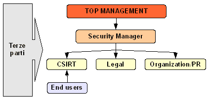

Torna alla pagina di Gestione degli incidenti informatici
:: Ruoli, responsabilità e standard nell'incident management ::
Ove non meglio specificato, tutti i testi tra virgolette vanno intesi come citazioni letterali dalle slide del prof Dario Forte, 2008.
Ruoli e responsabilità
Pianificare i ruoli e le responsabilità all'interno di un team di risposta agli incidenti informatici (CSIRT) è un'attività essenziale che andrebbe effettuata in fase di preparazione in modo molto attento, anche perché la sua efficacia potrà essere messa alla prova solo attraverso simulazioni o - più probabilmente - durante la risoluzione di casi reali. Va detto inoltre che nonostante la definizione di ruoli e responsabilità non sia un processo obbligato dalla legge, lo è per la stesura delle policy interne.
Vediamo come si colloca un team di risposta all'interno di un organigramma aziendale:

Nello schema individuiamo:
- il top management, che ha la responsabilità di garantire la sicurezza in ambito informatico;
- il security manager che riferisce gli sviluppi al top management. Il termine sicurezza in questo caso è inteso in senso ampio, dato che gli aspetti più tecnici sono gestiti nei livelli più bassi
- lo CSIRT (acronimo di Computer Security Incident Response Team) che si occupa dell'incidente a livello tecnico. Notare che in passato ci si riferiva ad essi col termine "CERT", ora legato al team di una specifica università
- Legal, che si occupa dell'incidente e del suo impatto solo a livello legale
- Organization/PR che interviene in caso di crisi per quanto riguarda le Public Relation
- Terze parti, ovvero società di consulenza esterne, legali esterni, polizia e magistrati che aiutano il personale interno a svolgere il lavoro
Nei capitoli successivi studieremo nel dettaglio le figure che gravitano attorno al team di risposta dell'incidente.
Core team di un IRT
Il cuore di un IRT (Incident Response Team) è composto dalle seguenti figure (dalle slide di Dario Forte, 2008):
- "CSIRT leader: il manager responsabile delle operazioni giornaliere del team"
- "Incident handlers: personale che riceve segnalazioni, esamina i dati dell’incidente, correla gli eventi e reagisce all’incidente, sia sul posto che remotamente". Non è detto che sia sempre il primo ad essere avvisato dell'incidente, ad esempio a volte la prima notifica arriva alle forze dell'ordine
- "Database administrator: il volume dei dati ricevuti tipicamente dall’IRT è elevato e necessità di un database per venire correttamente salvato e processato. Un db administrator è vitale per soddisfare questo requisito". Questa figura, che ha praticamente a che fare con la memoria storica del sistema, in alcuni casi può coincidere con l'incident handler
- "Legal counsel: questo esperto è responsabile nella conduzione delle operazioni del team in base alle vigenti leggi e normative in vigore e fornisce utili consigli sul comportamento da seguire". Può essere sia interno che esterno e viene generalmente consultato solo nei casi più complessi o particolari.
Professionisti o esperti
Al core team dello CSIRT si affiancano comunemente altre figure di professionisti o esperti, sia interni che esterni, che mettono a disposizione le proprie capacità e conoscenze. Vediamone alcuni:
- Esperti su meccanismi a bomba logica, capaci di rilevare e far fronte ad eventuali attacchi di questo tipo o simili azioni di sabotaggio
- Specialisti di settore, ad esempio i Sistemisti, che possono essere chiamati in operazioni di sistemi, reti, applicativi, etc...
- Ricerca e sviluppo, figure che per definizione devono conoscere benissimo i sistemi su cui operano perché devono verificarne vulnerabilità, rilasciare patch, scrivere e distribuire gli advisory, implementare meccanismi di notify
- "Amministratori di sistema: sono figure responsabili di mantenere gli strumenti di sicurezza e le informazioni in buono stato. Anche se non fanno parte formalmente del team di investigazione, i system administrator gestiscono il lavoro di “back-office” per il CSIRT."
- Esperto di Comunicazioni che aiuti l’IRT a rilasciare informazioni al management, ai media ed alle forze dell’ordine. Quelli interni sono comunemente gestiti dalle Human Resource (vedi dopo), mentre quelli esterni si occupano di comunicazione giudiziarie o istituzionali
- Human Resource (risorse umane), che assieme al reparto legale offrono supporto e consigli al core team sul come gestire l'incidente
Altre figure
Esistono altre figure professionali che possono affiancarsi al team per aumentarne l'efficienza, che esamineremo separatamente ma che possono far capo anche ad un'unica persona:
- SOC (Security Operation Center): "in una organizzazione che monitorizza proattivamente dispositivi quali Intrusion Detection System, queste persone controllano costantemente le segnalazioni per rilevare attività sospette o non autorizzate. Possono inoltre condurre periodici vulnerability assesements sui sistemi controllati. Solitamente il supporto fornito da tale personale è di tipo 24x7" (Dario Forte, 2008)
- Shift leader. Per meglio comprendere questa figura facciamo prima una considerazione sul change manager, ovvero colui che si occupa di gestire la migrazione dei sistemi informativi di un'azienda che passa da una condizione consolidata ad una nuova. Lo shift leader è responsabile in parte del change management ed in parte dell'escalation degli incidenti, cioè quel processo per cui si passa dallo stato di incidente informatico a crisi (ad esempio si parte con 2 computer infetti e si arriva nel giro di poche ore ad averne 1000). In generale la sua attività può essere riassunta come scalatura di azioni e interventi
- Help-Desk, figure interfacciate telefonicamente o via mail per il supporto degli utenti ed altre attività, quali: reset di password, creazione di una nuova segnalazione di incidente, risposta ad alcune domande di carattere generale sulla sicurezza. Per questi motivi devono essere costantemente aggiornati sulle politiche di sistema, o non sarebbero in grado di gestire alcune situazioni. Possono essere un point of contact, e in alcuni casi coincidono con il SOC
- LE (Law Enforcement), ovvero l'insieme delle forze di polizia che interagiscono attivamente o passivamente con l'azienda; in alcune infrastrutture critiche possono far parte di un response team, ad esempio negli ISP, nelle grandi aziende, nei siti militari, eccetera. Nella fase di preparazione va tenuto conto del fatto che la polizia potrebbe indagare esternamente anche se non consultata, quindi bisogna pianificare a priori le modalità di interfacciamento.
Considerazioni
Gli schemi visti finora sono utili alla comprensione ma non vanno applicati rigidamente, anzi bisogna creare e sfruttare le modularità così da guadagnare in flessibilità di intervento (soprattutto per mantenere aggiornati i manuali aziendali, in particolare la parte riguardante la privacy). Un eccesso di schematismo aumenta il livello di burocrazia (tipico delle grandi aziende) che inevitabilmente comporta un rallentamento dei tempi di intervento.
Come evitare tutto ciò? Manco a dirlo: facendo una buona preparazione (ma và).
Standard
Gli standard vengono spesso considerati parte delle normative esistenti, anche se in realtà non rientrano in questa categoria; si trattano piuttosto di politiche e procedure comunemente accettate e condivise dalla comunità scientifica. Per l'incident management ne esistono diverse, tra cui l'ISO 17799, l'ISO 27001, il NIST e varie RFC.
ISO 17799
L'obiettivo della ISO 17799 si può riassumere in quattro punti:
- fornire raccomandazioni per l'information security management
- definire una base comune per lo sviluppo di uno standard
- consigliare azioni per migliorare la sicurezza
- considerare tali raccomandazioni alla luce delle norme vigenti
Questa ISO può essere considerata come il documento master per la redazione delle proprie politiche di sicurezza, quindi rappresenta un punto di sviluppo cruciale per le linee guida. Ovviamente non tutte le sue indicazioni sono applicabili per ogni azienda, molto dipende dall'effettiva struttura del sistema (ad esempio le raccomandazioni sulla gestione dei mainframe difficilmente saranno utili a chi non li ha); per questo motivo nella ISO si usa più il "should" che il "must", in quanto si tratta sempre di procedure fortemente consigliate ma non obbligatorie (anche se le mancate osservazioni andrebbero sempre e comunque motivate). In questo modo si cerca di tener conto dell'ottica aziendale della gestione, lasciando un certo margine di arbitrio.
Lo standard ISO 17799 è a pagamento, mentre altri come quello del NIST (www.nist.gov) sono gratuiti. Tuttavia molte aziende ricercano response team certificati ISO, in quanto garanzia di efficacia e competenza.
Il capitolo 13 dell'ISO 17799 è quello che tratta la gestione degli incidenti informatici. Analizziamo di seguito due paragrafi.
Paragrafo 13.1: Reporting
Tutti gli eventi di sicurezza di un'azienda devono essere comunicati attraverso i report alle figure interessate, ovvero utenti, addetti, terze parti, eccetera. Questa attività è particolarmente importante per i responsabili della sicurezza del sistema, che possono mantenersi aggiornati sulle ultime vulnerabilità rilevate e sugli incidenti accaduti.
Il sistema di reporting deve essere adeguatamente pianificato a priori e spesso viene gestito tramite database.
Paragrafo 13.2: Incident management
Una volta ricevute tutte le informazioni sull'incidente bisogna gestirle in modo organico tenendo conto delle lezioni apprese (lesson learned), e se sono richieste delle digital evidence bisogna collezionarle assicurando la compliance con i requisiti legali. Solo in questo modo si può garantire un costante miglioramento delle procedure (continuous improvement process).
Torna alla pagina di Gestione degli incidenti informatici